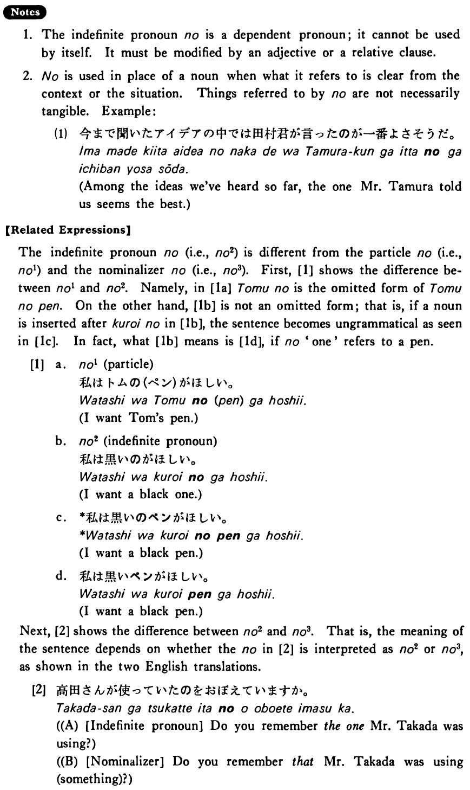

←
DoJG
→
の (2)
(B. 315)
Example sentences
(ksa).
私は大きい
の
を買った・買いました。
I bought a big one.
(ksb).
私は去年買った
の
を使った・使いました。
I used the one I bought last year.
(a).
A:どんな車が欲しいですか。 B:小さい
の
が欲しいです。
A: What kind of car do you want? B: I want a small one.
(b).
友達がワインを飲みたがったので昨日買った
の
を出した。
My friend wanted to drink wine, so I served the one I bought yesterday.
Formation
(i)
Adjective い informal nonpast の
高い
の
Expensive one
(ii)
Adjective な stem なの
丈夫
なの
Durable one
